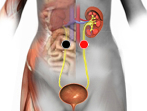

Varicela
Par
ureter - ureter

Generalidades:
Segunda causa de infertilidad en la mujer, en el niño se manifiesta como dermatitis. Constriñe los uréteres provocando exceso de orina. A veces sangrado, cistitis, insuficiencia renal, proteinuria (orina con espuma, indica la expulsión de proteínas, generalmente albúmina), Hematuria (sangre en la orina). Tipico ciatico. Dolor lumbar.
Para no confundirlo con otros pares se puede seguir con el imán desde el riñón hasta la vejiga.
Muy contagioso, por microgotas que viajan en el aire. La mujer embarazada puede contagiar al feto. Ver síndrome de Torch.